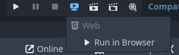
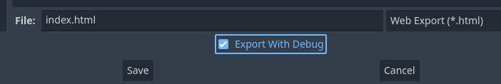

해당 페이지에서는 웹에서 어떻게 디버그 하는지에 대해서 설명합니다.
고도엔진은 웹에서 내보내게 되었을 때에 디버그와 관련된 여러 기능들이 브라우저와 호환됩니다.
Console.log() 대신, print() / push_error() / push_warning()을 쓰세요.
에디터에서 웹서버를 구동하여 바로 테스트해볼 수 있습니다.
웹으로 내보낼 때, 디버그와 함께 내보낼 수 있습니다.

JavaScriptBridge는 에디터 환경에서 실행 시, 오류를 반환합니다.
에디터에서만 실행해야할 필요가 있는 경우, 아래와 같은 조건문을 추가하여 웹과 에디터에서 실행할 코드를 분리할 수 있습니다.
1 2 3 | func _process(delta: float) -> void: if OS.has_feature('web'): # ... | cs |
해당 조건문 바깥에 있는 코드만 실행하게 됩니다.